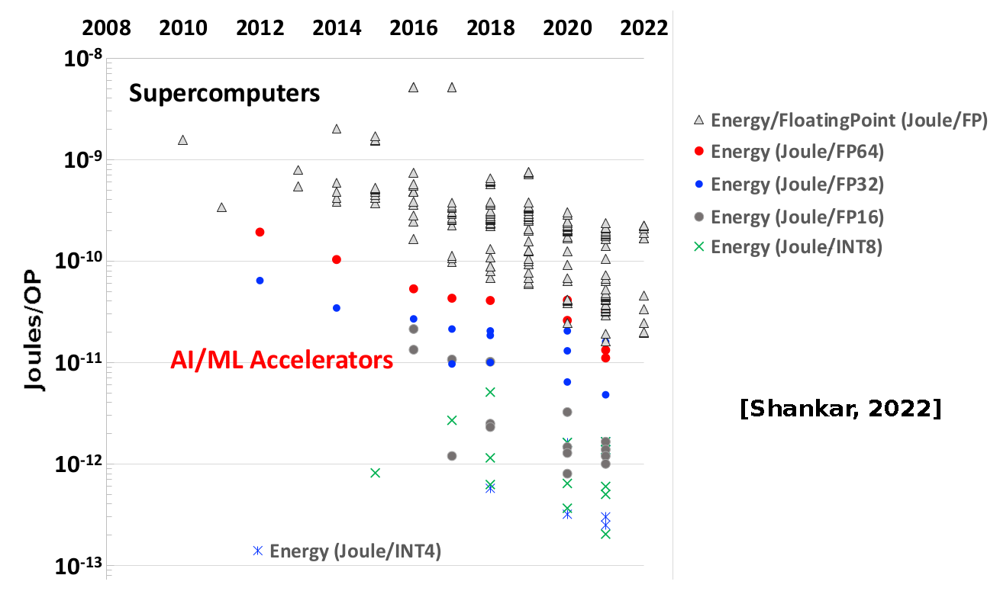

HPC for AI & Environmental impact of computation¶
Introduction to AI applications¶
AI Renaissance: Neural Networks¶
-
2012: AI renaissance brought by increased data availability and computation ressources
- breakthroughs in multiple domains
- many innovations: algorithms, specialized processors, optimizations
-
Most systems use neural networks:
- Training (stochastic gradient descent + backpropagation)
- Inference (forward pass)
-
For both, the bottleneck is matrix multiplication
Objectives¶
- Explain why dense linear algebra (GEMM) dominates NN compute
- Core SGEMM kernel ideas and common optimizations
- Use Roofline model to identify bottlenecks
- Understand mixed precision & quantization tradeoffs for energy/perf
Short introduction to Neural Networks¶
- Neural networks are composed of layers of neurons
- Each neuron computes a weighted sum of its inputs followed by a non-linear activation function \(f\)
-
Common activation functions: ReLU, sigmoid, ...
-
Perceptron: single layer of neurons (1958 Rosenblatt)
Architectures¶
-
Different architectures for different tasks:
- Fully connected layers
- Convolutional layers
- Recursive layers
- Transformers (attention mechanism)
Inference¶
- Inference: use the trained model to make predictions on new data
-
Forward pass through the network:
-
For each layer, compute the weighted sum and apply activation function
-
The weighted sum is a matrix-vector multiplication for fully connected layers and convolutions (often implemented as GEMM).
-
Two layer network¶
Layer 1:
- \(X\): input data [K × B] → K features, B batch size
- \(W_1\): weights [H × K] → H hidden units
- \(b_1\): bias [H × 1]
Layer 2:
- \(W_2\): weights [O × H] → O outputs
- \(b_2\): bias [O × 1]
ReLU \(f(x) = max(0,x)\), \(f'(x) = 1_{x>0}\)
Forward inference¶
- Layer 1 Pre-activation hidden (GEMM, H×K × K×B → H×B)
- Layer 1 Activation - ReLU (elementwise)
- Layer 2 Output pre-activation (GEMM, O×H × H×B → O×B)
- Layer 2 Activation - ReLU (elementwise)
- Forward is dominated by the two large GEMMs Z1 and Z2.
Training¶
- Training: adjust weights \(W\) and biases \(b\) to minimize a loss function \(L\) over a training dataset
-
Use backpropagation to compute gradients on each layer (chain rule)
-
Example with one neuron and MSE loss:
- Backward pass can be efficiently implemented using automatic differentiation and matrix multiplications.
Stochastic Gradient Descent¶
- Use stochastic gradient descent to update weights:
- \(\eta\) is the learning rate
- Repeat for many epochs over the training dataset
Training¶
- Forward pass to compute \(H\) and \(Y\)
- Compute loss \(L(Y, Y_{true})\)
- Backward pass to compute gradients.
The backward pass is also dominated by GEMMs.
Frameworks¶
-
Popular frameworks: TensorFlow, PyTorch, JAX, ...
-
High-level APIs for defining models, automatic differentiation, GPU acceleration
# Simple 2-layer NN in PyTorch
import torch
import torch.nn as nn
class Net(nn.Module):
def __init__(self):
super().__init__()
self.fc1 = nn.Linear(28*28, 512)
self.fc2 = nn.Linear(512, 10)
def forward(self, x):
x = torch.flatten(x, 1)
x = torch.relu(self.fc1(x))
x = torch.relu(self.fc2(x))
return x
SGEMM¶
Single-precision General Matrix-Matrix multiplication (SGEMM):

Naive SGEMM implementation (pseudocode)¶
// Initialize RES to C
for (i = 0; i < M; i++)
for (j = 0; j < N; j++)
RES[i][j] = C[i][j];
// Matrix multiply
for (i = 0; i < M; i++) {
for (j = 0; j < N; j++) {
for (k = 0; k < K; k++) {
RES[i][j] += A[i][k] * B[k][j];
}
}
- FLOPS: \(2 \times M \times N \times K\)
- min. Memory: \(4\) bytes \(\times (M \times K + K \times N + M \times N)\)
Locality issues in naive SGEMM¶
-
Stride in accessing B (column-major)
- Poor spatial locality
- Difficult to vectorize
- Cache misses for large matrices (reuse distance too large)
-
Low arithmetic intensity: \(\approx 0.5\) FLOP/byte for large matrices
Reordering loops (i,k,j)¶
- Sums
RES[i][j] += A[i][k] * B[k][j];are independent → reorder loops:
for (i = 0; i < M; i++)
for (k = 0; k < K; k++)
for (j = 0; j < N; j++)
RES[i][j] += A[i][k] * B[k][j];
-
A[i][k]does not depend onj→ load once, reuse N times -
RESandBaccesses are now stride-1 (row-major)
for (i = 0; i < M; i++)
for (k = 0; k < K; k++) {
const float temp = A[i][k];
for (j = 0; j < N; j++)
RES[i][j] += temp * B[k][j];
}
- Better spatial locality and easier to vectorize
Vectorization¶
Inner loop assembly for (i,k,j) ordering with AVX (8 float in a vector):
.loop: # Inner loop
vmovss xmm0, DWORD PTR A[i][k] # Load A[i][k]
vbroadcastss ymm0, xmm0 # Broadcast scalar to all lanes
vmovaps ymm1, YMMWORD PTR B[k][j] # Load B[k][j:j+8]
vfmadd231ps ymm2, ymm1, ymm0 # Fused multiply-add
vmovaps YMMWORD PTR RES[i][j], ymm2 # Store RES[i][j:j+8]
add j, 8 # Increment j by 8 (vector width)
cmp j, N # Compare j with N
jl .loop # Loop if j < N
Problems with (i,k,j) ordering¶
-
Temporal locality analysis:
- GOOD: \(A[i][k]\) reused in the inner loop, reuse distance \(1\).
- MEDIUM : For a fixed \((i,j)\), each \(RES[i][j]\) revisited once per k. So reuse distance \(K\) (one full row).
- To keep RES in cache between uses you would need cache \(\ge K \times 4B\)
- BAD : For a fixed \((k,j)\), \(B[k][j]\) used once per i. So reuse distance \(K \times N\) (entire B matrix).
- To keep B in cache between uses you would need cache \(\ge K \times N \times 4B\)
-
Still poor temporal locality for large matrices
-
Solution: tiling / blocking to increase reuse
Blocking (tiling)¶
- Idea: operate on sub-matrices blocks that fit in cache
#define BS 64 // Block size
// Loop over blocks
for (ii = 0; ii < M; ii += BS)
for (kk = 0; kk < K; kk += BS)
for (jj = 0; jj < N; jj += BS)
// Operate on blocks A[ii:ii+BS, kk:kk+BS],
// B[kk:kk+BS, jj:jj+BS], RES[ii:ii+BS, jj:jj+BS]
for (i = ii; i < min(ii+BS, M); i++)
for (k = kk; k < min(kk+BS, K); k++)
for (j = jj; j < min(jj+BS, N); j++)
RES[i][j] += A[i][k] * B[k][j];
Parallelization¶
- Each block operation is independent → parallelize over blocks
#pragma omp parallel for collapse(3)
for (ii = 0; ii < M; ii += BS)
for (jj = 0; jj < N; jj += BS)
for (kk = 0; kk < K; kk += BS)
// Block multiplication as before
- Each thread works on its own block → no false sharing
- Synchronization only at the end of the parallel region
- NUMA considerations: pin threads to cores, allocate memory close to threads
- Load balancing: static scheduling usually works well for large matrices
Libraries & autotuners¶
-
Highly optimized SGEMM implementations exist:
-
OpenBLAS, Intel MKL for CPU
-
NVIDIA cuBLAS for GPU
-
-
Implementations use blocking, vectorization, parallelization, and many architecture-specific optimizations
-
Libraries are carefully tuned for different sizes and shapes of matrices.
-
Autotuners (e.g., ATLAS, TVM, MLKAPS) can generate optimized code for specific hardware and problem sizes.
Roofline model - Definitions¶
-
Hypothesis: performance is limited by either compute or memory bandwidth
- performance: FLOP/s (vertical axis)
- memory bandwidth: Bytes/s
- arithmetic intensity: FLOP/byte (horizontal axis)
-
Simple visual model to understand bottlenecks
Roofline model - Bounds¶
- Compute bound: horizontal line at peak FLOP/s
- Memory bound: sloped line with slope = memory bandwidth
- \(\frac{\text{Flop/s}}{\text{Flop/Byte}} = \text{Byte/s}\)
Roofline model - SGEMM analysis¶
- Interactive demonstration and analysis
Environmental impact of computation¶
Introduction¶
-
Major ecological crisis: French roadmap targets carbon neutrality in 2050 (Stratégie Nationale Bas Carbone).
-
Requires a 40% energy consumption reduction.
-
HPC part of the solution: modeling and improving complex systems
HPC part of the problem¶
-
Frontier system at ORNL
-
More than \(10^{18}\) floating point operations per second
-
Consumes 21MW: the energy of a small town (\(16\,000\) french houses)
-

Environmental impact of computation¶
-
The ICT sector consumes \(\approx\) 5% of the energy wordwide
-
It accounts for 1.8% - 2.8% of emitted GHG [Freitag, 2021]:
-
Accounts for embodied emissions.
-
Shadow energy during the whole life-cycle: mining, fabrication, transportation, recycling.
-
-
GHG emmissions are only one of the sustainability issues
-
rare-earth mining and waste disposal (eg. Agbogbloshie).
- human-right abuses, health issues, pollution.
-
-
This presentation focus on energy consumption of HPC
What about renewable energies?¶
-
Low-carbon electricity is a limited ressource
-
Decarbonation \(\rightarrow\) huge increase in electricity demand
-
Heating, Transportation, Industry
-
Computing will compete for low-carbon electricity.
-
Energy consumption of HPC¶
Evolution of processing units [Batten, 2023]¶

Dennard's scaling 1970-2005¶
For each generation, transistors dimensions reduced by 30%,
-
Voltage and capacitance reduced by 30%
-
Frequency increases: \(\times 1.4 \approx 1/0.7\)
-
Surface halved: \(0.5 \approx 0.7 \times 0.7\)
-
Power halved: \(\Delta P = 0.7 \times 0.7^2 \times 1/0.7 \approx 0.5\)
Power per surface unit remains constant but manufacturers double number of transistors and frequency increases:
-
Power efficiency doubles every 1.57 years
-
Total power increases
Multicore 2005-2020¶
-
At current scale, leak currents start increasing (\(P_{\textrm{static}} \nearrow\)). Power wall slows Dennard's scaling.
-
Computing demand \(\rightarrow\) parallelism and specialization.
-
Number of cores increases exponentially since 2005.
-
Power efficiency still improving:
-
selectively turning-off inactive transistors;
-
architecture design optimizations;
-
software optimizations.
-
AI Accelerators 2020-2024¶
-
For domain specific applications, such as AI, specialized accelerators are used
-
Memory and compute units tuned for a specific problem (matrix multiplication) ;
-
Faster and better power efficiency: GPU, TPU, FPGA, ASIC.
-
Analysis of TOP-100 HPC systems¶
Efficiency and Peak computation exponential increase.
Rebound effects¶
-
In 1865, Jevons shows that steam engine improvements translate into increased coal consumption.
-
In HPC, efficiency gains contribute to the rising computation demand.
- net increase of the total power consumption.
-
Rebound effects for data-centers [Masanet, 2020]
- 6% increase in energy consumption from 2010 to 2018\ (255 % increase in nodes).
-
Indirect rebound effects: computation advances can contribute to the acceleration of other fields.
AI energy and computation costs¶
Training cost doubles every 3.4 months [OpenAI, 2020]¶

Should we study training or inference?¶
-
Training: huge cost but done once
-
GPT3, 175 billion parameters, \(\approx\) 314 ZettaFLOP
-
GPT4, 1.7 trillion parameters
-
-
Inference: millions of users and requests
- 80-90% cost of a deployed AI system is spend on inference [NVIDIA, 2019]
Inference cost - Diminishing returns for computer vision¶


Exponential increase in compute for linear accuracy gain [Desislavov, 2023 / Schwartz, 2019]
More frugal computing?¶
Smaller precision / Smaller models for AI¶

LLM success of smaller models (Llama, Chinchilla) fine-tuned for specific tasks with LoRA.
Tradeoff: Model complexity - Cost - Explainability¶
-
Inference cost grows with model complexity
-
Simpler models are often more interpretable
- Traditional science also prefers simpler models
-
DNN not necessary for all tasks
DVFS study of LU decomposition¶
- Knights Mill 72 cores
- Intel MKL dgetrf
- \(n \in [1000,3000]\)
- RAPL estimation
(Thomas Roglin, M1 UVSQ/INTEL internship 2023)
Save energy by computing slower: 1GHz¶

When accounting for the whole system¶
- Model: RAPL + 40W
- System power dominates at low frequencies
Race to idle: 2.6 GHz compute faster and turn off machine¶

Need for an interdisciplinary discussion¶
-
AI / HPC can contribute towards sustainability (eg. acceleration of weather forecast models) ... but its energy cost must be reduced
-
Efficiency:
-
Improve hardware and software
-
Use smaller models / smaller precision
... subject to rebound effects
-
-
Frugality in computing:
-
Balance computation cost vs. outcomes for each task
-
Choose the right sized model
-
Assess the environmental impact
-
Exemple: e-health solution in Tanzania [d'Acremont, 2021]¶
Treatment of febrile children illnesess in dispensaries.
-
IMCI: Paper-based decision tree WHO
-
e-POCT CART tree tailored to real data on a standalone tablet
-
Final CART tree easy to interpret and manually checked
-
Randomized-trial \(\rightarrow\) better clinical outcomes and antibiotic prescription reduction
-
-
Sophisticated AI that continuously collects patient data and adapts the algorithm ?
-
Increase in hardware and computation costs.
-
Loss in explainability and verification of the algorithm.
-
References - HPC for AI applications¶
References - Environmental impact of computation¶
-
Jones, Nicola (2018) ‘How to stop data centres from gobbling up the world’s electricity’. Nature, 561(7722), pp. 163–167.
-
Freitag, Charlotte, Berners-Lee, Mike, Widdicks, Kelly, Knowles, Bran, et al. (2021) ‘The real climate and transformative impact of ICT: A critique of estimates, trends, and regulations’. Patterns, 2(9), p. 100340. online
-
Masanet, Eric, Shehabi, Arman, Lei, Nuoa, Smith, Sarah and Koomey, Jonathan (2020) ‘Recalibrating global data center energy-use estimates’. Science, 367(6481), pp. 984–986.
-
Schwartz, Roy, Dodge, Jesse, Smith, Noah A. and Etzioni, Oren (2019) ‘Green AI’. arXiv:1907.10597
-
Amodei, Dario, Hernandez, Danny, Sastry, Girish, Clark, Jack, et al. (2018) ‘AI and compute. OpenAI’. https://openai.com/blog/ai-and-compute/
-
D'Acremont presentation: https://youtu.be/oKcy_cY0QOw